깃헙은 리눅스를 개발한 리누스 토발즈가 만든 깃(Git)이라는 툴을 온라인상으로 서비스하는 대표적인 서비스중 하나입니다.
자 그럼 그 깃(Git)은 무엇이냐?
여러분중에는 버전관리 시스템이나 협업시스템의 필요성을 느끼신적이 있을겁니다.
이 깃(Git)은 그런 문제를 해결해주는 툴로써 각 버전별로 롤백구간을 만들고 혹은 분기를 시키는등을 통하여 버전관리와 함께 여러 사람이 하나의 프로젝트에 소스코드를 수정하고 그걸 한곳에 넣어놓고 반영하고 합치는걸 가능하게 해주는 툴입니다.
그냥 복사본을 만들면되지 굳이 어렵게 이런걸 써야 하나요?
이런 질문을 할수 있을겁니다.
하지만 백업을 해두기위해 여러 사본을 만들어놓는다고 하죠.
이렇게해서 관리가 잘되면 물론 간단하게 관리할수 있습니다.
사본1, 사본2, 사본3....
이렇게 쭉 나가다보면 결국 어느시점에서는 사본넘버링을 잘못 붙일수도 있고 그런 실수로 인해 사본관리가 어려워지는 난감한 상황이 발생하게 됩니다.
심지어 경우 따라서는 새로 추가된 기능이 문제가 되어서 도로 기능을 삭제하는 롤백을 해야되는 경우도 생길수 있습니다.
이럴 때 깃은 그런 걱정을 전혀 할필요가 없습니다.
실수로 잘못 최신 브랜치에 일부 코드가 망실되더라도 롤백하여 되돌리면 여기서부터 다시 마스터브랜치에 씌우거나 혹은 포크를 통하여 버전을 쪼개서 나눌수가 있습니다.
그럼 이 깃헙(Github)이라는건 어떻게 사용하는 건가요?
깃(Git)에는 주로 사용하는 간단한 기능이 몇가지 있습니다.
바로 Pull(다른 저장소에서 내저장소로 가져오는 기능)과 Push(내 저장소에서 다른 저장소에 밀어넣는 기능. GUI툴에 따라 Pull request 라고 표기 되기도 합니다.)입니다.
온라인 저장소에 있는걸 내려받을때는 Pull, 내 저장소에 있는걸 온라인에 올릴때는 Push를 통하여 덮어쓰는 동작만 알고 계시더라도 이미 깃헙의 기능을 절반은 익히신 겁니다.
백문이 불여일견 자 그러면 우리 직접 한번 해볼까요??
3. Github desktop 혹은 이와 유사한 GUI(그래픽 유저 인터페이스)툴을 내려받습니다.(다른 툴 중에는 source tree 라는 툴이 유명합니다)
(물론 CLI 같은 터미널 환경을 써도 되지만... 굳이 그렇게 어렵게 쓸필요는 없자나요? 물론 이것도 깊게 파실거면 공부해두시면 도움은 될태지만 우리는 쉽게 마우스 포인터로 조작할수 있는 툴을 쓰도록 합시다!)
https://desktop.github.com/
4. 그리고 설치를 진행합니다.
그 과정중에 로그인을 요구하는데 그냥 해주시는게 편합니다.
가입했던 깃헙 서비스의 아이디(메일주소)와 비밀번호를 넣고 로그인을 해줍니다.
그러면 이런 화면이 나올겁니다.
5. 여기서 연습용 리파지토리(tutorial repository...)를 만들어서 시험해보셔도 되지만 우리는 이미 온라인상에 리파지토리를 만들어뒀자나요?
Clone a repository from the Internet... 을 선택해 줍니다.
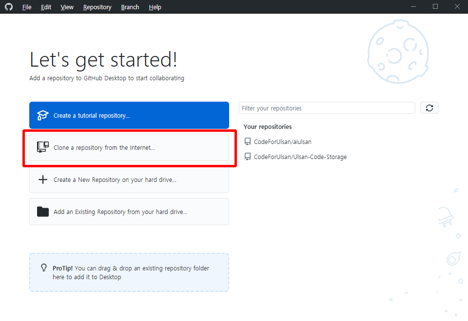
6. 그러면 이렇게 클론 리파지토리를 선택하는 화면이 나오는데 여기서 초대받은 리파지토리 CodeForUlsan/aiulsan 이 나타난다면 그걸 선택하고 하단에 Local path 항목에 서버 리파지토리로부터 내려받아 저장할 공간을 지정해 주시고 Clone 이라는 버튼을 눌러주세요.
이때 지정된 폴더는 반드시 비어있는 공간이여야 합니다. 그렇지 않으면 기존에 저장된 여러분의 개인 파일들이 삭제되는 불상사가 벌어질수 있습니다.
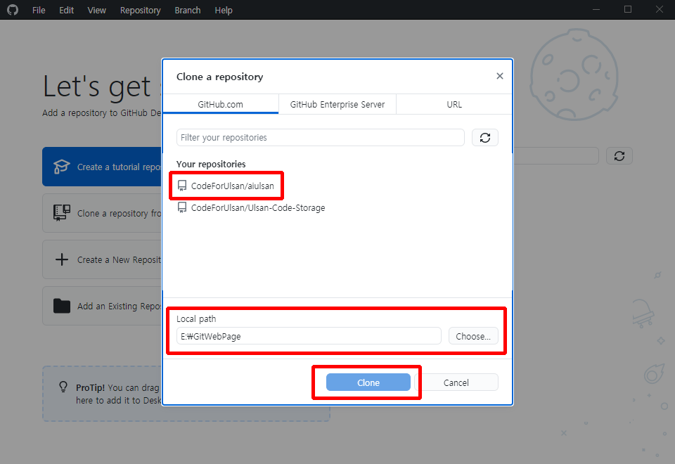
7. 그러고나면 이렇게 Cloning aiulsan 이라고 뜨면서 깃헙 서비스에 올라가 있는 파일들을 내려받는 과정이 진행됩니다.
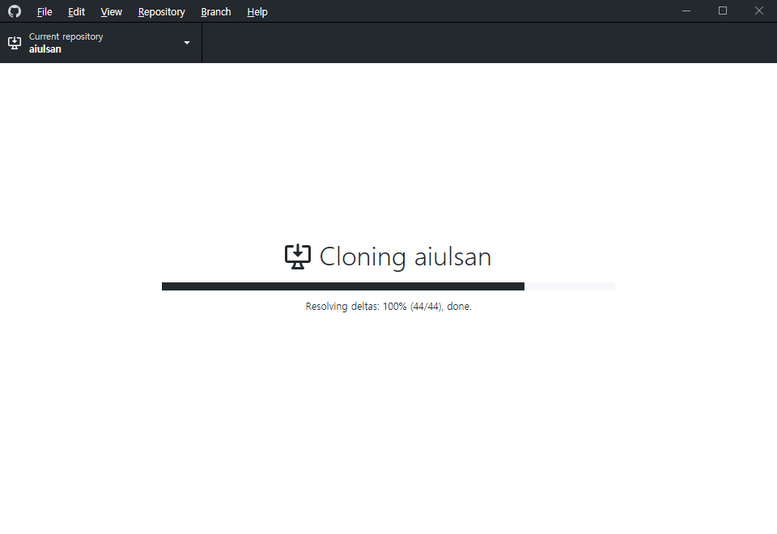
8. 자 실제 해당 디렉터리에 가볼까요? 짜잔 이렇게 파일들이 내려 받아졌습니다!
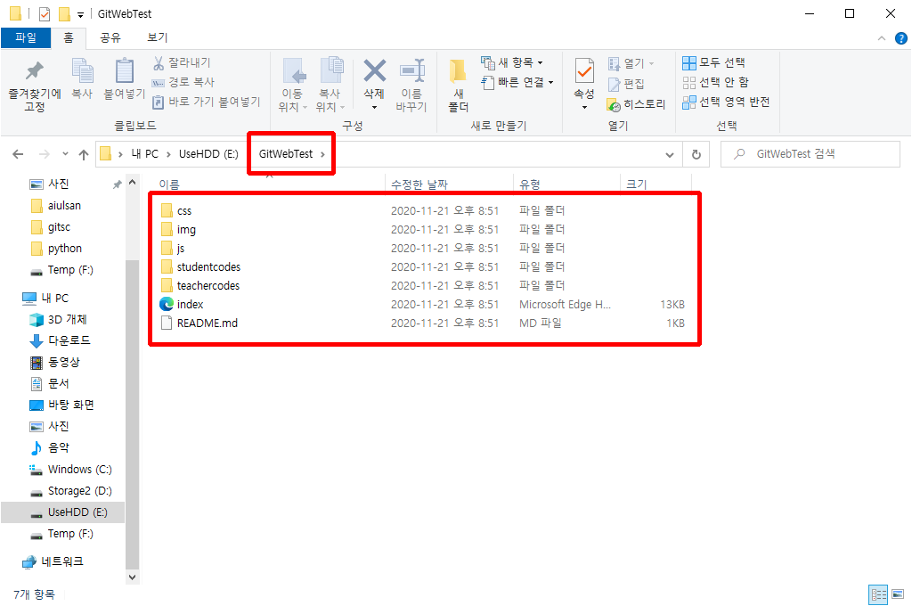
9. 다시 깃헙데스크탑으로 돌아가보면 화면이 이렇게 되어있는걸 확인할수 있을겁니다. 이제 실제 사용할 준비가 모두 끝난 것입니다.
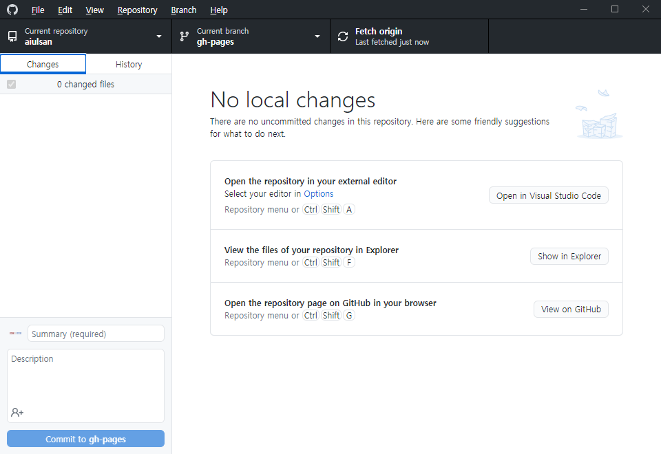
10. 그럼 이제 실제 깃헙을 이용해 저장소에 기여를 해보도록 합시다! 연습용으로 여기 제가 test라는 폴더를 하나 만들어 놓도록 하겠습니다.
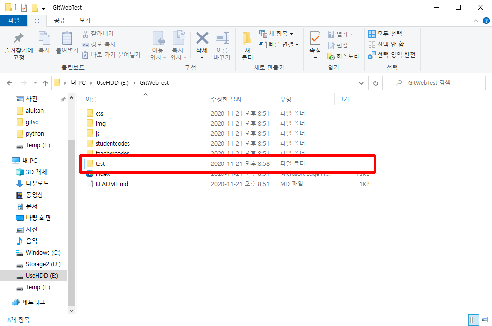
그리고 그안에 test.html이라는 파일을 하나 만들겠습니다.
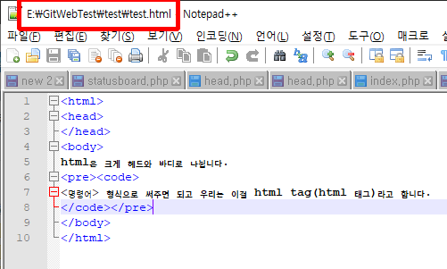
11. 그러고 난뒤에 깃헙 데스크탑 화면을 보면 이렇게 친절하게 내 저장소에서 어떤 변화가 일어났는지 감지하고 그것을 보여줍니다.
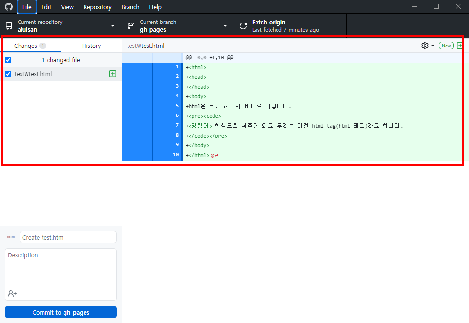
12. 자 일단 변경사항을 깃헙 서버에 반영을 해보도록 하겠습니다! 방법은 간단합니다.
하단 Commit to 저장소의 브랜치이름 버튼을 눌러줍니다.
지금의 경우엔 Commit to gh-pages 가 되겠죠 만일 Commit 버튼이 안눌러진다면 어떤 변경점이 있었는지 해당 내용에 대한 코멘트를 달지 않았기 때문입니다.
이것을 반드시 쓰도록 하는 이유는 한사람만 쓰는 작업공간이 아닐 경우 어떤 변경점이 있었는지 다른이들은 알수가 없기 때문에 미리 메모를 해둬야만 여러사람이 이 내용을 알수있기 때문입니다.
Description까지 상세하게 남겨둔다면 추후에 문제가 생겼을 때 어느지점으로 롤백시켜야될지 알기도 쉽고 버전관리에 유용하게 사용할수있기 때문에 가급적 업데이트시의 내용을 상세히 적어주는 습관을 들이시는게 좋습니다.
자 일단 Commit을 눌러 변경된 내용을 내 저장소의 브랜치에 반영시켜 줍니다.
“내가 이런걸 변경한게 맞아”라고 확인하는 과정이라고 이해하시면 되겠습니다.
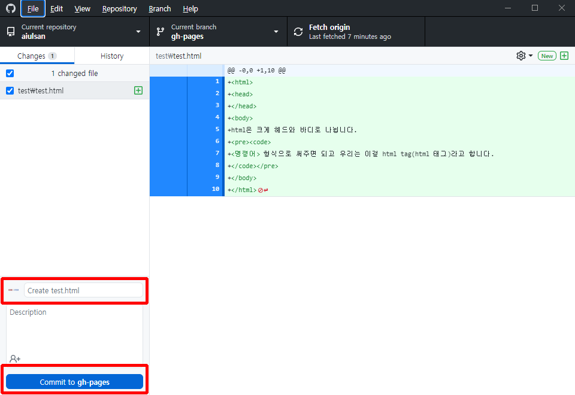
13. 그러고나면 처음 화면과 별반 다를게 없는 화면으로 돌아왔는데 자 여기서 눈썰미 좋으신분은 몇가지 변경점을 눈치채셧을 겁니다.
바로 Commit 버튼 하단에 없었던 항목이 하나 보이고 오른쪽에 Push origin이라고 항목이 바뀌어있고 숫자가 표시되어 있습니다.
이제부터 우리가 하는 과정을 Push 혹은 Pull request라는 과정입니다.
실제 서버 레파지토리에 변경사항을 반영 하는것이죠, 그리고 잘보시면 Commit 버튼 밑에는 작게 Undo 라고 쓰여있는 버튼이 하나 생성되어 있습니다.
네 만약 아까 Commit 했던 작업에 실수가 있다면 되돌려주는 기능이라는게 대충 감이 오실 겁니다.
하지만 우리가 진행했던 과정에 실수는 없었기 때문에 그대로 서버에 반영을 하도록 합시다! Push origin을 과감하게 눌러줍니다.
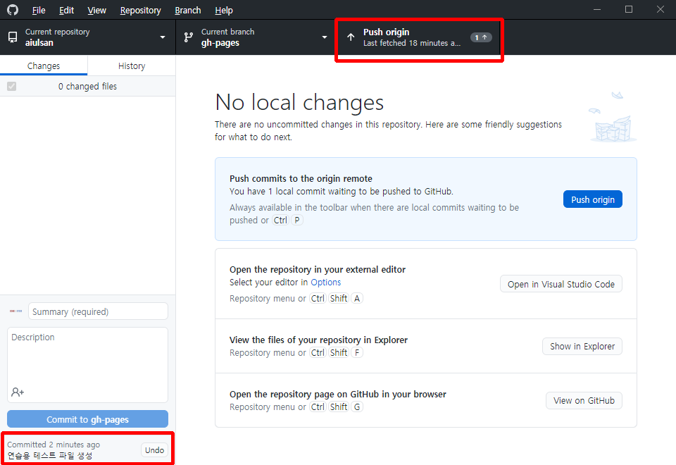
14. 그러고나면 Push과정이 진행되고 Commit을 해주기전 화면으로 돌아온 모습을 볼수있을겁니다.
만약 그렇지 않다면 네트워크 연결에 따른 에러로 인해 서버에 Push를 못했거나 기타 다른이유로 여러분의 작업내용이 반영이 되지 않은것이므로 차근차근 다시 처음부터 진행을 해보시면 되겠습니다.
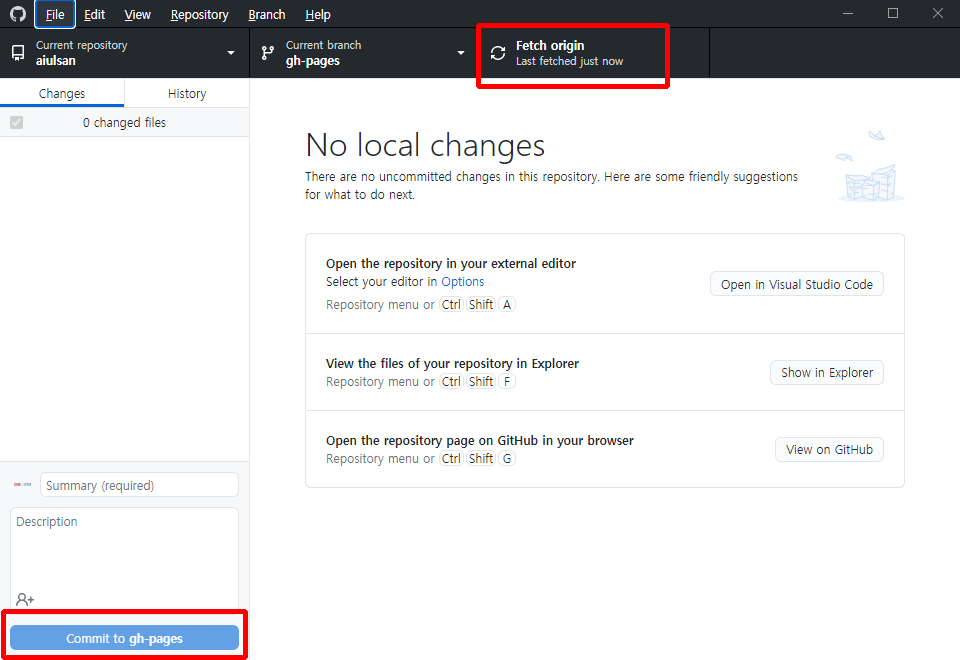
15. 자 이러면 이제 깃헙의 주 사용법은 거의 모두 깨우친겁니다.
사용하다보면 롤백을 할 일보다는 이렇게 소스코드를 보완하고 올리고 반영시키는 작업을 더 자주 할것이기 때문에 Commit과 Push를 할줄 아신다면 여러분도 이제 깃헙에 정식으로 입문을 하신겁니다.
덤으로 한번 아까 올린 test.html을 열어보도록 하죠
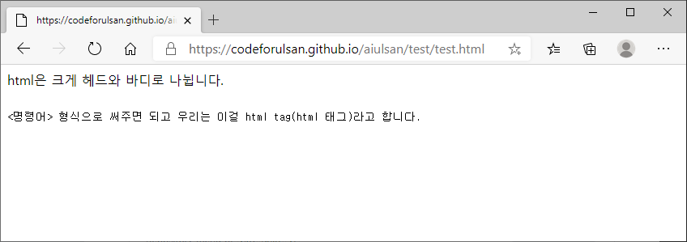
이상 깃헙에 대한 간단한 사용법이였습니다.
더 자세한 내용은 인터넷 검색을 해보시면 많은분들이 자신의 시행착오를 통해 깃헙 사용법에 익숙해지는 과정들을 올려두셨을 거기때메 그것들 참고해가면서 사용법을 익히시면 되겠습니다.
여러분의 많은 기여 부탁드리겠습니다!